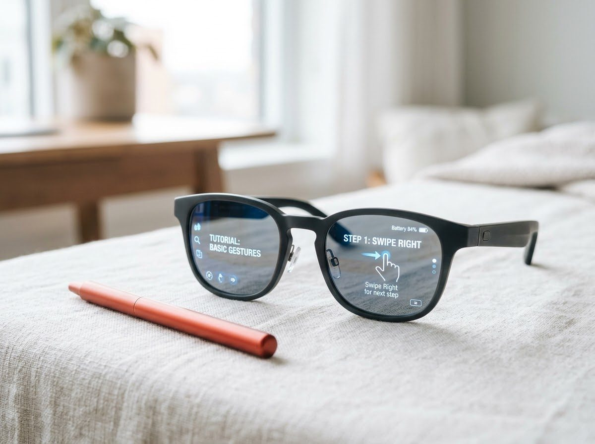
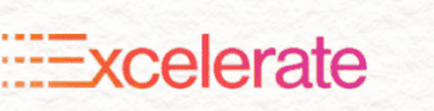
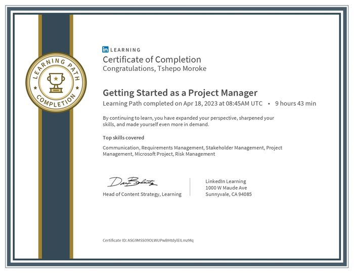
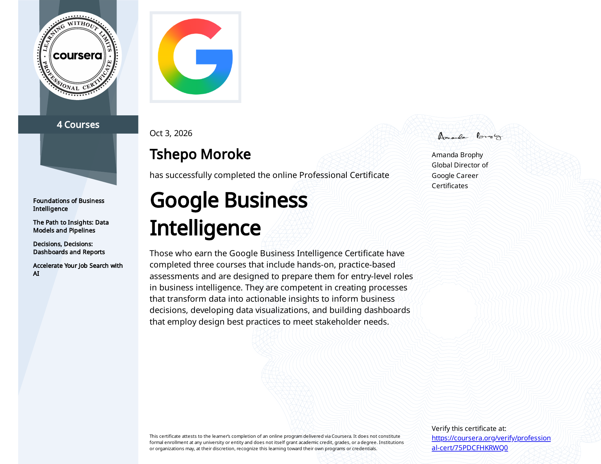
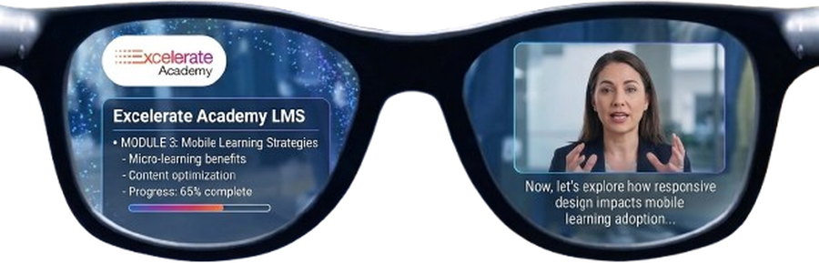
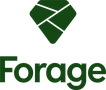
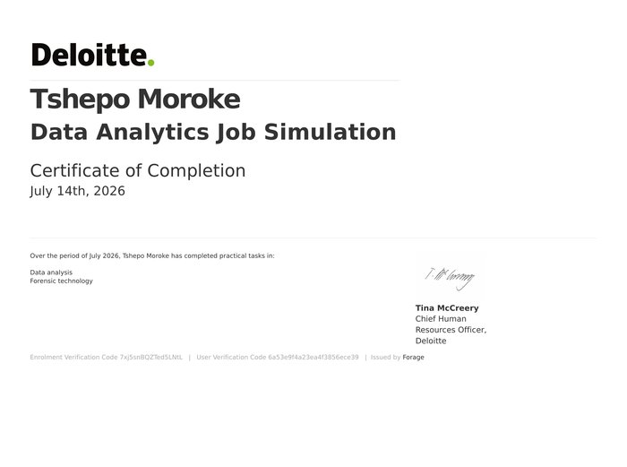

Business Analyst building toward a Solutions‑Architect roadway.
I'm Tshepo Moroke, based in Pretoria. This site documents my roadway toward becoming a Business Analyst — every project here is a real step along that path: a real dataset cleaned, a real dashboard shipped, a real stakeholder conflict worked through, not a case study read about in a textbook. Requirements documentation, process mapping, and data verification are the foundation I've been building that roadway on.
Based In
Pretoria, South Africa
Education
Business Management N6
Focus
Business Analysis
4
Case Studies Documented
8
Qualifications & Certifications
3
Internships & Job Simulations
✵
Highlights
Recognition & Milestones
1
Star Performer Distinction
AI Powered Data Analysis Remote Internship (RIT) & Future Learning Summit 2027, Project Management Trainee Internship
Data Analytics & PM2026
2
Data Analytics Job Simulation
Deloitte Australia, via Forage — Daikibo Industrials engagement
Forensic Analysis2026
3
Business Management N6
Pretoria Technical College
Education2025
Case Studies4 Projects


Future Learning Summit 2027
Case Study 01 · Project Leadership
A simulated 10-day global virtual summit, planned end-to-end as Team Lead — budget, stakeholders, and QA.
$62,000 budget2,500+ participants
Open case study
Predicting Learner Participation
Case Study 02 · Predictive Analytics
An XGBoost model that flags which learners will follow through on the opportunities they sign up for.
A Tableau dashboard diagnosing factory downtime, plus an Excel pay-equity audit across four factories.
4 factories9 machine types
Open case study
Google Business Intelligence
Case Study 07 · BI & Dashboards
Google's four-course BI certificate — framing questions, moving data, and dashboards stakeholders can act on.
4 courses88–100% scores
Open case study
Qualifications & Certifications
Education
Formal Qualifications
Matric (NSC)
Greenwood College — 2019
Completed
Business Management N4 & N5
Damelin College — 2022
Completed
Business Management N6
Pretoria Technical College — 2025
Completed
Certifications & Courses
Learning Path completed 11 April 2023 · 12 hours 38 min. Skills covered: Spreadsheets, Microsoft Excel.
Learning Path completed 18 April 2023 · 9 hours 43 min. Skills covered: Communication, Requirements Management, Stakeholder Management, Project Management, Microsoft Project, Risk Management.

Internships
Job Simulations
Tools & Applications
Google Sheets
Google Docs
Google Slides
Google Colab
Gmail
Google Chat
Google Meet
Miro
Supabase
Notion
Tableau
ClickUp
Google Sheets
Google Docs
Google Slides
Google Colab
Gmail
Google Chat
Google Meet
Miro
Supabase
Notion
Tableau
ClickUp
Case Study 07 — Business Intelligence & Dashboards
Google Business Intelligence
Google Career Certificate · 4-course specialization, via Coursera.
Data VisualizationETL PipelinesStakeholder Dashboards
Situation
Wanting the full BI pipeline, not just the tools
Plenty of short courses teach a single BI tool in isolation. I wanted a structured path that covered the whole chain — framing a business question, modelling and moving the data, then building something a stakeholder could actually act on — so I enrolled in Google's four-course Business Intelligence Professional Certificate.
Approach
Four courses, one deliverable thread
The Foundations course ran on a fictional company, MarkIt, where I produced a Stakeholder Requirements document, a Project Requirements document, and a BI Strategy document — translating a vague business ask into something a data team could actually build against.
The next three courses built on that foundation in sequence: modelling data and designing ETL pipelines in The Path to Insights, then applying design best practices to dashboards and stakeholder reporting in Decisions, Decisions, and finally using AI tools for job-search readiness in the capstone course.
Outcome
Specialization completed, each course assessed
Completed all four courses, with practice-based assessments graded between 88% and 100%.
Foundations of Business Intelligence — 88.28%. The Path to Insights: Data Models and Pipelines — 93.75%. Decisions, Decisions: Dashboards and Reports — 97.28%. Accelerate Your Job Search with AI — 100%. The certificate was issued 3 October 2026.
Skill Demonstrated
Turning raw data into a decision stakeholders can use
The thread running through all four courses: a BI professional's job isn't finished when the data is clean or the dashboard is built — it's finished when a stakeholder can look at it and make a call. That's the standard I've carried into the case studies on this site.
Credential
Google Business Intelligence
Professional Certificate completed 3 October 2026 · 4 courses: Foundations of Business Intelligence, The Path to Insights, Decisions Decisions: Dashboards & Reports, Accelerate Your Job Search with AI.

Case Study 01 — Project Leadership
Future Learning Summit 2027
Team Lead, coordinating six teammates · , sponsored by Saint Louis University, powered by Excelerate.
Claude AI · Google Sheets · Google Docs · Google Slides · Google Meet · ClickUp
The Concept
A global classroom, seen through smart glasses
This is a fictional event, created as the internship's core project deliverable — it was never actually held. The planning, budget, and stakeholder documentation below were built to a real professional standard as an exercise in the full project management lifecycle.
Future Learning Summit 2027 is a 10-day global virtual event where participants learn using XREAL's AI-powered smart glasses instead of handheld devices — lessons, live translation, and an AI tutor appear directly in the wearer's field of view, hands-free, so they're never looking down or losing eye contact with what's around them.
The event is hosted by Excelerate (the education platform) in partnership with XREAL (the smart-glasses technology company): Excelerate gets a flagship AI-education event, XREAL gets a real-world classroom showcase and qualified leads. To drive engagement across all 10 days, the 5 most active participants win their own pair of XREAL smart glasses.
As Team Lead, I coordinated six teammates through the full planning lifecycle as the core deliverable of the internship — this wasn't a live event, but the documentation was built to the same standard as if it were.

$62,000
Event budget
2,500+
Target participants
40+
Countries
10 Days
Live summit (Oct 30 – Nov 8, 2026)
Planning ran across a 5-month lifecycle, July 10 – December 6, 2026, culminating in the live summit.
Approach
Four weeks, what I did and what I learned
Week 1
Project Initiation & Planning
What I did
Led Team 18, coordinating six teammates
Built the Team Charter, full Project Proposal (vision, objectives, KPIs, budget breakdown, risk register), and Global & Virtual Event Engagement Plan
Defined the project's foundation: the $62,000 budget, 2,500+ registration target, and 5-phase lifecycle
What I learned
Translating a vague brief into concrete, measurable objectives and KPIs
Structuring a multi-week team project with clear task ownership from day one
Scoping a budget top-down before any activity-level detail exists
Week 2
Implementation Planning & Stakeholder Management
What I did
Built the Project Implementation Plan solo: WBS, Gantt timeline, task dependencies, risk register
Compiled the Stakeholder Management Plan and Stakeholder Analysis Matrix from teammate input, reconciling inconsistencies rather than merging drafts
Caught a real gap — two members had no visible ownership in the compiled stakeholder docs despite owning tasks elsewhere — and fixed it
What I learned
Sequencing dependencies instead of just listing tasks
Power-Interest stakeholder prioritization as a decision-making tool, not just documentation
Reconciling multiple people's independent work into one consistent source of truth
Week 3
Quality Assurance & Budget Planning
What I did
Built the Activity-Based Budget Plan solo — 23 line items reconciled exactly to $62,000, resource allocation, contingency rules
Co-built the Quality Assurance Framework (Logical Framework, Four-Level Model) — 14 quality aspects, compiled from partial team submissions
Managed a live team-capacity issue: reassigned tasks with documented backup coverage when a member's availability became uncertain
What I learned
Activity-based budgeting forces specificity that category-level budgets hide
Quality assurance means defining measurable standards tied to actual project phases, not just "checking things work"
Real team management: redistributing work without losing accountability
Week 4
Integration & Communication
What I did
Revised the Implementation Plan to integrate three weeks of work into one coherent strategy
Built and refined a 12-slide Final Presentation Package — caught and fixed an AI-generated visual look (repeated card grids, hub-and-spoke diagrams, colour-cycling) and replaced it with authentic, varied treatments
Assigned and rehearsed a 4–5 person speaking plan under 8 minutes, with backup coverage and a script rewritten to explain the concept before the numbers
What I learned
Strategic integration means showing how plans connect, not just having all four exist
Presenting to a non-technical audience means leading with plain-language concept, not jargon or stats
Iteration is normal — most of Week 4 was refinement in response to real feedback, not first drafts
Outcome
Future Learning Summit 2027 — Project Process Map
Team 18 · 5-Phase Lifecycle · 10 July – 6 December 2026
Finalize objectives & audience
Confirm XREAL sponsorship & budget
Confirm speakers & panelists
Phase sign-off
Build website & registration platform
Develop content & XREAL demo logistics
Launch marketing campaign
Platform live & speakers briefed
Deliver 10-day live summit programming
Run daily engagement mechanics
Monitor platform & demo stability
Event concludes
Fulfill XREAL giveaway (top 5)
Send thank-you comms & certificates
Close out sponsor commitments
All deliverables closed
Analyze survey & KPI results
Deliver lessons-learned report
Every deliverable moved from a solo or co-built draft to a reconciled, team-wide source of truth, including catching and correcting real gaps along the way — missing stakeholder ownership in Week 2, an uncertain member's capacity in Week 3, and a generic AI-look presentation in Week 4.
Skill Demonstrated
Running the full PM lifecycle, not just documenting it
Translating a vague brief into measurable KPIs, reconciling six people's independent work into one source of truth, activity-based budgeting to the dollar, and catching a generic-looking deliverable before it shipped — the difference between knowing project management frameworks and actually running one under a real deadline.
Documentation & Supporting Materials
Everything behind this case study
01
Business Requirements Document
Objectives, scope, stakeholders, and ten traceable functional requirements.
Over four weeks I led Team 13 through a full data analytics lifecycle: cleaning and understanding a raw learner-opportunity dataset, engineering features and uncovering participation trends, building and evaluating predictive models, and synthesizing everything into a program insights report and executive presentation for RIT's program managers.
The core question: which learners are likely to follow through on the opportunities — internships, courses, events, competitions, engagements — they sign up for, and what should the program actually do about it?
The Challenge
No systematic way to anticipate drop-off
RIT's opportunity programs had no systematic way to anticipate learner drop-off. The dataset spanned 8,558 learner-opportunity records across 71 countries and 2,089 institutions — but raw and unexamined: corrupted dates, no engineered signals, and no visibility into where participation was actually breaking down.
Approach
Four weeks, raw CSV to stakeholder-ready model
Week 1
Data Understanding
Audited and cleaned all 8,558 records; identified and fixed 107 corrupted date values
Built a full data dictionary and profiled every field across 5 opportunity categories, 71 countries, and 2,089 institutions
Established the clean baseline dataset the rest of the project was built on
Week 2
Feature Engineering & Cohort Analysis
Engineered 15 new features (16 → 31 columns), including application speed, opportunity duration, and cohort timing
Uncovered the project's central finding: Internships drew 63.3% of all signups but carried a 65.8% rejection rate, versus near-zero rejection for every other category
Identified a cohort-volume effect — smaller signup months converted far better (84.7% peak) than the largest cohort month (27.2%)
Week 3
Predictive Modelling
Trained and compared four models — Logistic Regression, Decision Tree, Random Forest, and XGBoost
Selected XGBoost as the primary model: 87.23% accuracy, 93.57% precision, 78.56% recall, 0.940 ROC AUC
Diagnosed the model's error profile (false negatives outnumbering false positives ~4:1) and translated that into a concrete threshold-tuning recommendation
Week 4
Synthesis & Communication
Compiled three weeks of findings into a Program Insights & Recommendation Report and a stakeholder-ready presentation deck
Verified every figure in the final deliverables against the underlying source reports before submission
From a "selectivity" problem to a capacity problem
Reframed what looked like an internship "selectivity" problem into a capacity and communication problem.
The analysis gave RIT program managers a model that flags exactly which learners — particularly the roughly 50% of Internship applicants sitting in the model's medium-confidence tier — are most worth proactive outreach before they disengage.
Reflection
The handoff between analysis and decision-making
Leading this project end-to-end — from a raw CSV to a model in production-ready form and a report a program manager could act on — sharpened how I think about that handoff. The most useful thing I did all internship wasn't the model itself; it was insisting that every number in our final deliverables be traced back to a verified source before it reached a stakeholder.
This simulation replicates real work from Deloitte Australia's Data Analytics team, working for a fictional manufacturing client, Daikibo Industrials. It covered two engagements: building an interactive telemetry dashboard to diagnose equipment downtime, and auditing compensation data for gender pay equity.
Task 1 — Data Analysis
Factory downtime dashboard, built in Tableau
Daikibo collects machine telemetry from four factories — Tokyo, Osaka, Berlin, and Shenzhen — each running nine machine types reporting status every 10 minutes. The brief: find where machines broke down most, and which machine types drove it.
I imported and unified a month of JSON telemetry data (May 2021) across all four locations, then built a calculated field — Unhealthy — converting each unhealthy status reading into 10 minutes of estimated downtime. From there I built two visualizations, Down Time per Factory and Down Time per Device Type, and combined them into a single interactive dashboard where selecting a factory dynamically filters the device-type breakdown to that location. That let me identify the highest-downtime factory and drill straight into which machine types were driving it.
4factories unified
9machine types tracked
Task 2 — Forensic Technology
Classifying a gender pay equality audit, in Excel
Following internal complaints about pay inequality, Daikibo's Forensic Tech team had already scored every job role at every factory on an Equality Score (–100 to +100, 0 being ideal). My job was to classify each score into a discrimination tier so the findings could be acted on: Fair (–10 to +10), Unfair (beyond ±10 up to ±20), and Highly Discriminative (beyond ±20).
I added a fourth column, Equality Class, and classified all 37 role/factory records against that rule — cross-checking the logic against the provided worked examples (10 → Fair, –9 → Unfair, –30 → Highly Discriminative) before applying it at scale.
The pattern that emerged: scores skewed consistently negative, and the imbalance concentrated at the top of the org chart — C-Level, VP, Director, and Manager-tier roles clustered in the Unfair and Highly Discriminative bands across all four factories, while Engineer-tier and Machine Operator roles stayed mostly within the Fair band. That points the client toward senior leadership and management pay bands as the priority area for corrective action, rather than a company-wide issue.
Skill Demonstrated
Same discipline, two different tools
Both tasks followed the same underlying discipline: take a raw, client-supplied dataset, apply a defined analytical rule consistently, and surface a conclusion a non-technical stakeholder can act on — which factory to prioritize, which management tier to investigate. That mirrors the kind of first-pass diagnostic work an analyst hands to a client engagement lead.
Credential
Data Analytics Job Simulation
Deloitte Australia, via Forage — practical tasks completed in data analysis and forensic technology.


✵
Let's Build
Start A Conversation
Let's Build
Have a process worth mapping?
Every project here started as something I had to figure out, not something I already knew how to do.